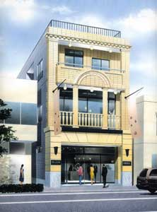
ビル・店舗
ism
田口建築設計事務所はクライアント事業成功のために経済、文化、自然といった環境諸条件を踏まえ、クライアントのニーズをいかに実現させるかを大きなテーマとして設計業務を行っています。
田口建築設計事務所は、組織で設計を行います。一つのプロジェクトに対して様々な分野の専門技術を集結し、組織による総合力を発揮して設計を行います。
さまざまな可能性への挑戦。常に時代の最先端の技術を取り込みながらあらゆる建築、施設に関する設計力を蓄積してきました。これからも新たなる付加価値を創造し挑戦し続けていきます。
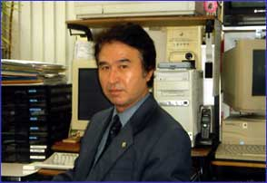
roots
当社のスタートは1879年の初代田口安之助の工匠時にさかのぼります。2代目田口新一郎は宮大工として上野不忍池の弁天堂を、3代目田口昭一は当時都内で一番大きな木造校舎、葛飾区綾南小学校を手掛けて参りました。常に時代の最先端技術を取り入れる創業理念はおよそ130年近い時の流れの中でも変わることはありません。多くのクライアントから高い評価と信頼を頂き、誠心誠意これからも努力を続ける決意であります。
works
田口建築設計事務所は、住宅、社寺建築、遊技施設、店舗、病院などをはじめ様々な用途にその設計業務を展開してきました。さらに文教、文化、福祉等の公共施設や商業施設を含む広い分野にその範囲を広げています。
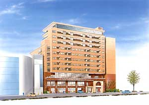
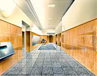
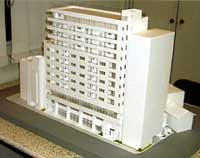

ビル・店舗
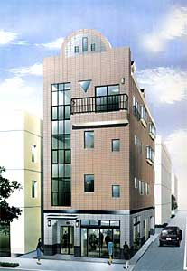
ビル・店舗
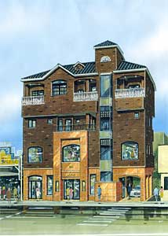
ビル・店舗
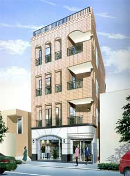
ビル・店舗
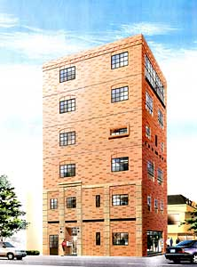
ビル・店舗
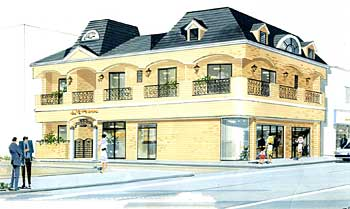
ビル・店舗
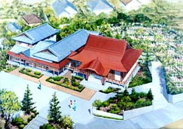
社寺建築
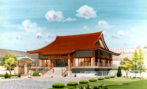
社寺建築
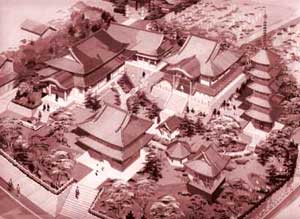
社寺建築
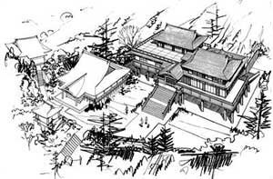
社寺建築
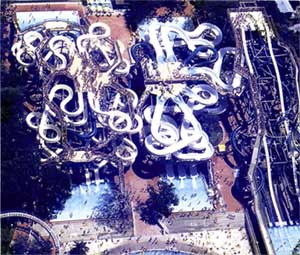
遊技施設
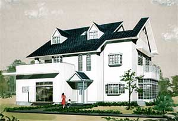
住宅
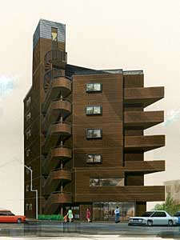
マンション
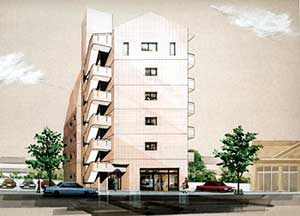
マンション
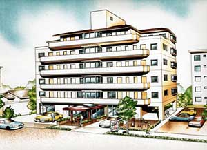
マンション
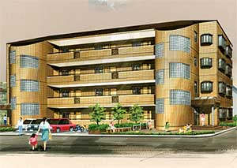
マンション
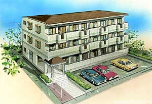
マンション
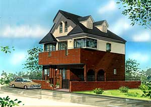
住宅
掲載写真・データはすべて当事務所の設計実績です。
このほかにも病院・商業施設・公共施設など多数の設計監理実績がございます。
service
一戸建住宅・ビル・マンション・社寺建築・耐震診断など多岐な設計に携わっています。
木造住宅を中心に、ご家族の暮らし方に合わせた新築・改築の設計監理を行います。小規模な増改築のご相談も承ります。
RC造・S造の共同住宅を数多く手掛けてきました。土地の有効活用のご提案から、事業計画に合わせた設計まで対応します。
店舗併用ビルや複合用途ビルの設計監理。地元・葛飾区を中心に、事業に直結する建物を数多く設計してきました。
本堂・客殿・庫裡・山門などの新築・増築設計。宮大工の家系に連なる事務所として、社寺建築研究会にも参画しています。
住宅、保育園、学校施設の耐震化を積極的に推進して耐震診断、耐震補強設計を行っています。官公庁施設の実績もございます。
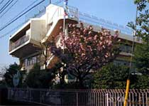
特殊建築物調査資格者・建築設備検査資格者として、建築物および建築設備の定期調査・検査を行います。
新築、改築ご予定のお客様、又、土地の有効活用の提案も行っておりますのでお気軽に何でもご相談ください。田口建築設計事務所では長年の経験を生かし、お客様の立場になってご相談に応じております。
seismic
私どもの事務所は、住宅、保育園、学校施設の耐震化を積極的に推進して耐震診断、耐震補強設計を行っています。
代表・田口和一は2003年8月、「耐震診断スペシャリスト」として日本テレビ『ニッポン探検隊』に出演し、木造2階建て住宅の診断調査の様子が放送されました。同年9月には国立科学博物館で開催された「The 地震展」の耐震補強セミナーに、東京都建築士事務所協会 常置委員会情報副委員長として参加しています。
東京都応急危険度判定員・住宅性能表示制度評価員としての登録もあり、木造住宅密集地域を抱える地元・葛飾区で、行政や地域と連携した耐震相談にも長年携わってきました。
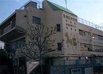
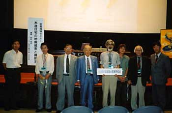
community
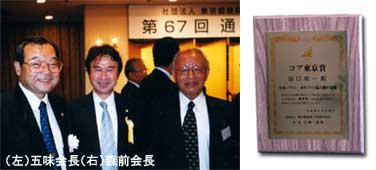
葛飾支部会員の有志8名で「葛飾区内まちづくりアドバイザーグループ」を設立。木造密集地である四つ木地区で一軒一軒にチラシを配り、区の出張所をお借りして無料相談を重ねてきました。「大手とは違う、その人の視点に立って考えることが大事」という姿勢で相談にあたっています。
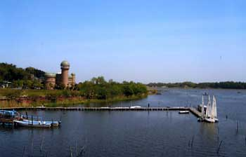
住民・行政・研究者が一体となって手賀沼の浄化と地域文化に取り組む「手賀沼学会」の会員として活動しています。かつて手賀沼のほとりでは白樺派の文化人が活躍し、この地が文化の香り高いことは周知の通りです。
license
建築士事務所登録番号
※ヒアリングのうえ記載
当事務所は一般社団法人 東京都建築士事務所協会の会員です。登録番号は正式な原稿確認時に記載いたします。
reason
初代・田口安之助の工匠から数えて4代。宮大工として上野不忍池の弁天堂を手掛けた家系の技術と姿勢を受け継いでいます。
木造住宅、社寺建築、店舗併用ビル、SRC造12階建ての駅前複合ビルまで。用途・構造を問わず設計監理を手掛けてきました。
住宅・保育園・学校施設の耐震化を推進。官公庁施設の耐震診断・耐震補強実施設計の実績があり、テレビ出演やセミナー登壇の経験もあります。
亀有駅南口から徒歩1分。東京都建築士事務所協会 葛飾支部長、葛飾区都市計画審議会委員などを務め、地域の建築相談に長年応じてきました。
flow
お電話またはお問い合わせフォームから。何でもお気軽にご相談ください。
敷地の状況を確認し、ご要望・ご予算・法規制を整理します。
ヒアリング内容をもとに、平面計画と概算をご提示します。
プランを固め、構造・設備の方針を含めて設計を進めます。
施工図レベルまで詳細を詰め、施工会社の見積を調整します。
建築確認申請の手続きを代行します。開発許可が必要な場合も対応します。
設計どおりに施工されているかを現場で確認し、監理します。
完了検査を経てお引渡し。お引渡し後のご相談も承ります。
※ 上記は建築設計事務所における一般的な流れです。実際の進め方は案件の規模・用途により異なりますので、詳しくはご相談ください。
fee
業務報酬額については、（社）東京都建築士事務所協会の「設計料」のページをご覧ください。
設計監理料は建物の用途・規模・構造・工事費によって異なります。金額の目安についてはお打ち合わせの際にご説明いたしますので、まずはお気軽にご相談ください。
ご相談の段階で費用が発生することはありません。「まだ計画が固まっていない」「建てられるかどうかを知りたい」という段階でも構いません。
faq
company
| 社名 | 有限会社 田口建築設計事務所 |
|---|---|
| 所在地 | 〒125-0061 東京都葛飾区亀有3-8-2 ラシーヌ青野2F |
| 電話 | 03-3601-8788 |
| FAX | 03-3601-5639 |
| taguchik@pastel.ocn.ne.jp | |
| 創立 | 1979年12月25日 |
| 代表者 | 代表取締役 田口 和一 |
| 建築士事務所 登録番号 | ※ヒアリングのうえ記載 |
| 業務内容 |
|
| 所属団体 |
|
| 代表者略歴 |
日本大学生産工学部建築工学科卒業。 相原建築設計事務所室長を経て、1979年田口建築設計事務所設立。 住宅・マンション・病院・商業施設・社寺建築・設計監理多数。 官公庁施設耐震診断・耐震補強・建築定期調査、検査。 その他、遊戯施設「ゆうえんち豊島園」ウオータースライダー設計を手がける。 2002年（社）東京都建築士事務所協会の「コア東京賞」優秀賞受賞。 1999年から2005年（社）東京都建築士事務所協会常置委員会広報副委員長・情報副委員長。 1999年から2005年葛飾区役所 区民相談室 建築相談委員長。 2001年から2004年2級・木造建築士試験委員を歴任。 2003年8月「耐震診断スペシャリスト」として日本テレビ『ニッポン探検隊』に出演。 2003年9月6日「The地震展」。 2004年7月〜8月ハーバード大学・マサチューセッツ工科大学に研修。 |
| 公職・委員等 |
|
| アクセス | （地下鉄千代田線直通）常磐線 亀有駅南口より徒歩1分 |
news
木造住宅の耐震診断のご相談を受け付けております。まずはお電話ください。
葛飾区内の店舗併用ビルの設計監理業務が完了いたしました。
ホームページを開設いたしました。作品事例を随時追加してまいります。
※ このお知らせの掲載内容はサンプルです。実際の内容に差し替えてご利用いただけます。
access
| 所在地 | 〒125-0061 東京都葛飾区亀有3-8-2 ラシーヌ青野2F |
|---|---|
| 最寄り駅 | （地下鉄千代田線直通） 常磐線 亀有駅南口より徒歩1分 |
| 電話 | 03-3601-8788 |
| FAX | 03-3601-5639 |
| taguchik@pastel.ocn.ne.jp |
contact
何でもお気軽にお問い合わせ下さい。